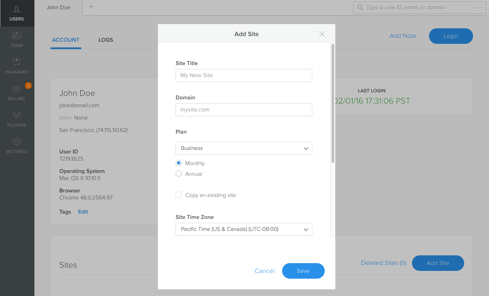
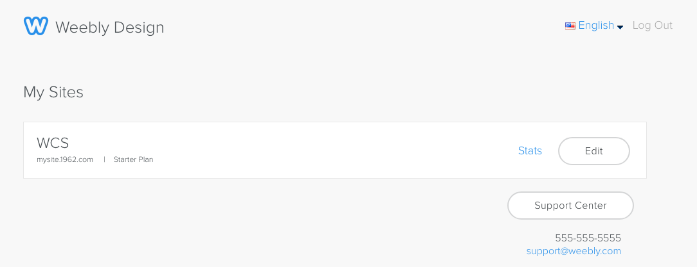
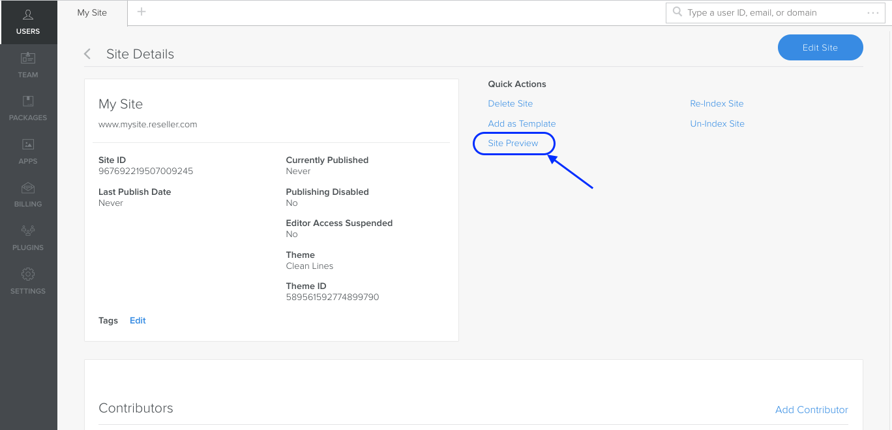

Once a user is created, they can create and implement their site(s). Or you can create a site for them, either from Cloud Admin or programmatically. You can also create templates that you can copy to create new sites. Once the site is created, you can use the Editor to edit, preview, and publish the site.
Use Cloud Admin to Create Sites
Note: Using Cloud Admin to work with user and sites is not available to all Weebly installations. If you do not have this functionality and want more info, contact your Weebly representative.
Once you’ve created
a user, you can then use Cloud Admin to create a site for that user.
Note: You must create at least one plan before you can create a site.
To create a site:
In the Cloud Admin, from the user’s detail page, in the Sites area click Add Site.
In the Add Site dialog, you must provide a title and a unique domain, and select a plan to assign to the site.
Note: Domain names must be unique and must not contain weebly.
In the Site Template area, select New Site to create a new site from scratch. Or use a template or copy an existing site (more in the next sections).
Optionally, provide site settings like timezone, date format, language, and more.

In the Theme Gallery, choose the theme for the site. If you’ve created custom themes they display on the tab with your company name.
caption text
Click Save.
Unless you set contributor permissionsthe user has complete access to all pages and settings for the site, including the ability to edit and publish.”
Create a Site Using a Template
Instead of creating a site from scratch, you can start with a template. Templates are sites that you’ve created to use as a starting point for new sites. For example, you might create a template for an online store and one for a portfolio site.
You can create up to 30 templates.
To create a template:
Optionally create a user that will “own” the template sites, then create your template sites under this user. While you can create a template out of any user’s site, this is a great way to organize and manage your templates.
Create a site following the instructions above. Add elements and design your site.
Optionally add apps from the Weebly App Center or your own custom apps. But remember that access to apps is based on plans , so you may be restricting the potential sites that can use the template by adding apps. To avoid this, when you use the template, you can temporarily change the plan the new site is on so that it allows access to the App Center. More below.
Tip: Remember that a template is a starting point. Don’t add too many elements, or design too specifically. It may end up being more work to remove what isn’t needed than it would have been to start from scratch.
In the Cloud Admin, from the details page for your template site, click Add as Template.
Once added, that site appears as a template available for use when you chose to copy a site. More in the next section.
To remove a template:
If you want to stop using a site as a template, from the Site Details page, click Remove as Template.
Copy a Site
Instead of creating a site from scratch, you can copy an existing one. There are two common use cases for copying a site:
You’ve created templates that you copy to create new sites
A user wants to create a clone of one of their existing sites
When you copy a site, it copies the existing site and theme, and copies all pages and page content. Orders and members are not copied, and neither are blog posts. Products, membership settings, and any installed apps are copied. Apps from the App Center will appear in the new site as they do in the original, however they will be in a disconnected state. You or the site owner will need to explicitly grant permission to reconnect the app when logging into the Editor.
To copy a site:
Following the steps above for creating a site in Cloud Admin.
In the Add Site dialog, scroll down to the Site Template section.
Choose to either copy a template that you’ve created or to copy an existing site.
If you choose to copy a template, a dropdown displays showin all templates that you have created. Select the one to use.
If you choose to copy an existing site, select one of the existing sites from the dropdown.
If the new site is not on a plan that allows access to the App Center, the app will work, but you will need to temporarily change the plan to connect the app.
To allow an app on a plan that doesn’t support the App Center:
Temporarily change the site’s plan to one that has access to the App Center.
Log into the site from the Cloud Admin and in the Editor, grant the permissions for the app.
Change the plan back to the original one.
Anyone editing the site will be able to manage the app, but will not be able to visit the App Center.
Use the API to Create Sites
Instead of using the Cloud Admin to create or copy a site, you can use the API directly.
When creating a Weebly site you must provide a domain name. Errors will be thrown if the user_id is invalid or the domain name is already assigned to a Weebly site. A site id (ex. 447410440673519990) is returned upon successful creation of a site.
There are many optional parameters that can be passed when creating a site. More information can be found in the API doc, here.
Note: If no plan_id is provided, then the site is assigned the default plan.
Use Plug-ins to Create Sites
If you use plug-ins with Weebly Cloud, then your users create sites using the plug-in’s UI. This image shows the page in APS2 Weebly Cloud plug-in UI where you can create a site.
Edit a Site
Once a site is created, you can edit the site one of two ways:
From the user’s detail page of the Cloud Admin, click Login.
Then click Edit from the portal.

Or, from the site’s detail page in the Cloud Admin, click Edit.
The site opens in the Editor, where you can make any needed changes.
Preview a Site Before Publishing
You can preview how a site will appear live without publishing, from the Editor. The site displays in a preview window with a temporary URL. You can send this URL to team members or users so they can view the site. The URL remains valid for 30 days.
To preview a site:
In the Editor, click Preview.
Note: Only users accessing the Editor from Cloud Admin will see the Preview button. It is unavailable to users accessing the site from the User Portal.
OR, in the Cloud Admin, from the site’s detail page, click the Site Preview link.

The site displays in a preview window. Copy the URL from here and send to the user or team member.
Note: Blogs, Commerce, Search, Forms, and Membership do not work in preview sites.
Publish a Site
When you publish a site, it goes live at the domain you’ve registered for the site and can be immediately accessed.
To publish a site:
From the Editor, click Publish.
Change a Site’s Domain
You can change a site’s domain when needed.
From the site’s detail page, click Set Domain and enter the new domain.
Note: Domain names must be unique and must not contain weebly.